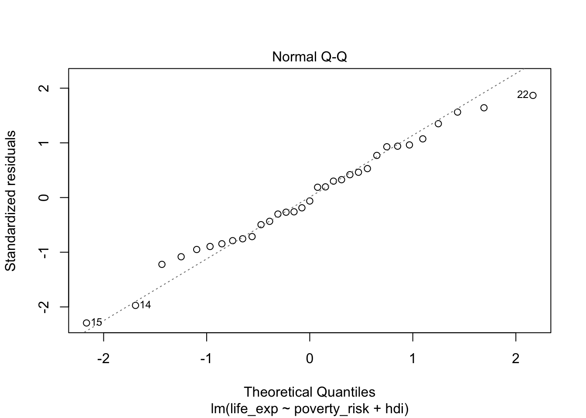

Regression diagnostics
While some regression assumptions, such as validity and representativeness, cannot be checked from the data directly, others can. Namely, the assumptions of linearity, constant variance, normality and the absence of influential observations and additivity should be checked every time they are relevant to a given goal. Note that not every assumption has to be satisfied for every model. For example, constant variance is only needed for hypothesis testing using the classically computed standard error. If our is not inference or if we use robust standard errors, constant variance is not needed to reach a valid conclusion.
Basic regression diagnostics
Basic regression diagnostic involves checking the assumption of linearity, constant variance, normality and absence of influential observations.
Let’s start with creating a regression model predicting life expectancy of European countries by poverty rate and and Human development index:
mod1 = lm(life_exp ~ poverty_risk + hdi, data = countries)For start, we can use the generic plot() function. The plot() function, when applied to a linear model object, produces by default four plots, each useful for checking a different assumption. We will go over all of them.
The assumption of linearity
The assumption of linearity refers to the fact that metric and ratio independent variables should have a linear relationship with the dependent variable. In other words, it should be possible to capture the relationship between variables by using a straight line.
To check this assumption we can plot the residuals of our model against the predicted values of the dependent variable. If the assumption of linearity is fulfilled, the residuals should not exhibit any curvilinear pattern.

Example of A) Linear relationship B) Curvilinear relationship
In the graph above, we can see that when the assumption of linearity is satisfied (plot A), there is no discernible pattern and data points are spread along the horizontal line starting at zero. On the other hand, the data plot B shows noticeable nonlinear pattern.
To plot such diagnostic graph for our model, we can use the base plot() function with argument which = 1:
plot(mod1, which = 1)
Notice that the plot() function by default overlays the residual plot with a loess line, to help us discern the relationship between predicted values and residuals. We see that the relationship in our plot is not completely linear, indicating that our model is not correctly specified to capture the relationship between life expectancy, human development index and poverty rate.
The assumption of normality
The second common assumption is the assumption of normality. Linear regression assumes that errors follow the normal distribution. Though we cannot check the distribution of errors,we can check the distribution of residuals and these residuals should ideally be normally distributed.
Arguably the best tool for checking if some data are following a specific theoretical distribution is Quantile-Quantile plot, or Q-Q plot. A Q-Q plot is simply a scatterplot of quantiles coming from the normal distribution on one axis and quantiles of our observed data on the other axis. To use Q-Q plot, we first compute the quantiles of normal distribution with the mean and standard deviation of our observed data. Next we compute the values coresponding to quantiles from out data. Lastly, we compare the values of the theoretical quantiles with the observed ones.

Q-Q plot examples of A) Normally distributed B) non-nonormally distributed data
If our data come from the normal distribution, the Q-Q plot will show a straight line, indicating, indicating that the values of the theoretical quantiles match the values of the observed one. On the other hand, if the distribution of our sample deviates from the normal distribution, the points in our Q-Q plot will deviate from the straight line.
To create Q-Q plot for residuals from our model, we simply use the generic plot() function with an argument which = 2:
plot(mod1, which = 2)
Looking at the Q-Q plot from our model, we can see that our residuals follow the normal distribution quite nicely.
The assumption of constant variance (homoscedasticity)
The standard ordinary least square regression assumes that the variance of residuals is constant across the whole range of the dependent variable. This assumptions allows for a convenient mathematical shortcut when computing standard errors of regression coefficients, and as such is crucial in situations where our goal is statistical inference.
Residuals, that are constant across the entire range of the predicted variable are called homoscedastic. The opposite of homoscedasticity is then heteroscedasticity.
To check if the variance of residuals is constant, we can plot the residuals against the predicted values of the dependent variables. If the assumption of homoscedasticity (and the assumption of linearity) is fulfilled, we will see the residuals equally spaced along the expected value of the Y axis. On the other hand, if the assumption of constant variance is violated, the residuals will be more spread out in some parts of the plot than in the others. It is also common to take a square root of the residuals to “squish” the data points together to make the plot easily interpretable in presence of outliers.
The following plot shows A) homoscedastic residuals and B) heteroscedastic residuals:

Example of A) homoscedastic data B) heteroscedastic data
To create such plot for our model, we can use the plot() function with argument which = 3:
plot(mod1, which = 3)
Notice, that our residuals do not fulfill the assumption of linearity and therefore the expected value of the residuals is not the same at all values of the dependent variable. We are therefore interested if the the residuals of our model are equally spaced along the red loess line. This mostly appear to be true, indicating that the assumption of constant variance is fulfilled.
Absence of influential observations
The last of the basic assumptions of linear regression is the absence of influential observations. Influential observations are those which have an overly large influence on the final form of our model, to the point where they bias our inference and predictions.
The overall influence of an observation can be measured using Cook’s distance, a measure of how much would the predictions made by our model change, if that specific observation was removed from dataset. Cook’s distance itself is a function of residuals and leverage.
Leverage tells us how big a role an observation plays when fitting a regression line. More specifically, observations with high leverage are those which lie far from the center of the data. To understand why, remember that a) the goal of linear is to minimize the (squared) vertical distance between the regression and observed values and b) the regression line will always go through the center of the data, i.e. the mean of all included variables. We can therefore think about fitting the regression line as a children’s seesaw, with pivot in the middle. From our kindergarten days, we should remember that the further from the pivot we sit on the seesaw, the stronger pull/push we have. In other words, the further we are from the center, the higher our leverage.
However, just because an observation has high leverage does not necessarily mean it will distort our model. What if the observation lied far from the center of the date, but still in line with the general trend? Removing such observations would not affect the model much. Only in the situation where the observation has both high leverage and does not match the trend in our data, will the observation influence the model as a whole.

Plots showing the effect of A) high leverage, low residual B) low leverage, high residual c) high leverage, high residual